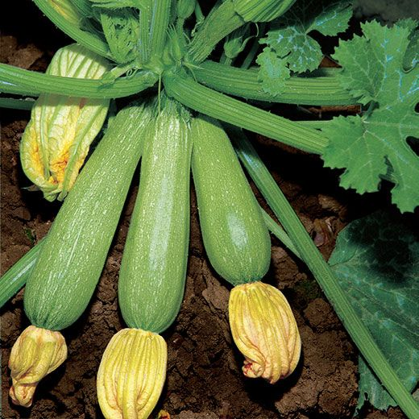
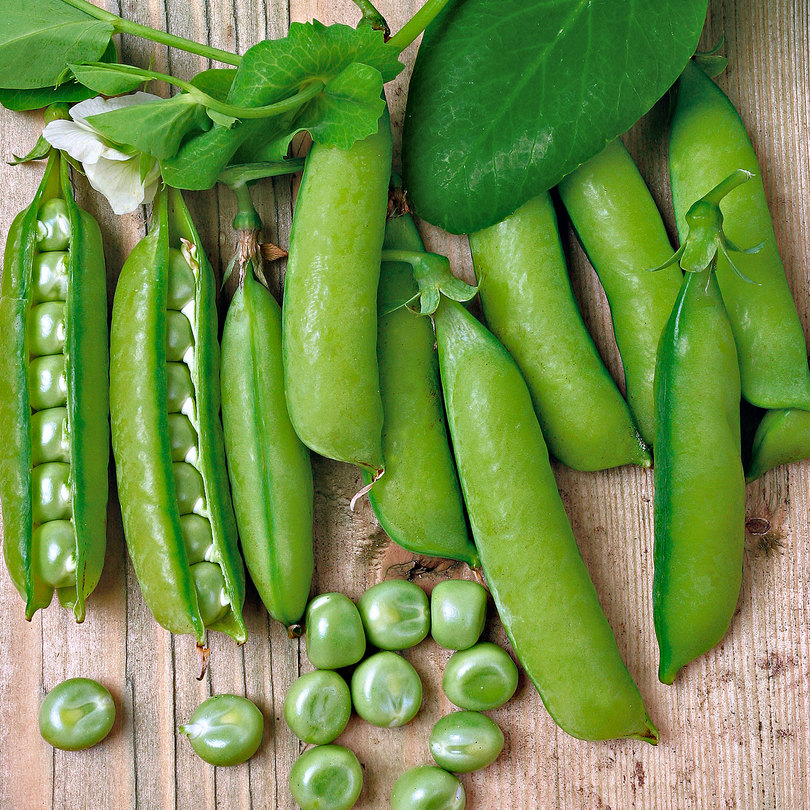

Zucchine
Coltivare in terreno molto ricco di materia organica e non coltivare dopo Solanacee o piante della stessa famiglia delle cucurbitacee.
- Varietà: Zucchina chiara di Faenza
- Periodo di semina: Marzo / Aprile
- Primo raccolto: Fine Aprile
- Ultimo raccolto: Fine Luglio
-
Raccolto
Dimensione Quantità Piccole(10cm) 16 Medie(11-16cm) 26 Grandi(>16cm) 9 51
Piselli
American wonder: Varietà media precoce come ciclo colturale.
Consigli
-
Piantare in semenzaio riscaldato.
E' importante:- Acquistare vasetti biodegradabili (di cocco o cartone)
- Mantenere areato il semenzaio per evitare muffe
- Non usare il coperchio del semenzaio
- Non mettere vicino al termosifone
- Fissare i sostegni nel terreno non appena le piantine raggiungono i 10cm
- Acquistare una rete con spazi di più di 10cm per garantire sostegni adeguati